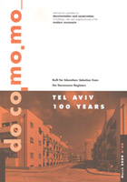
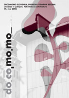
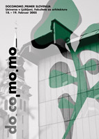
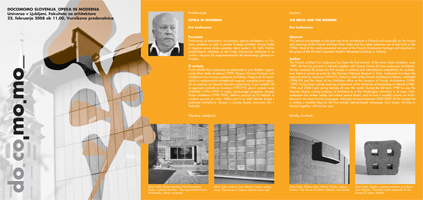

DOCOMOMO INTERNATIONAL: DOCOMOMO je akronim za DOcumentation and COnservation of MOdern MOvement (Dokumentacija in konservacija modernega gibanja). Docomomo International je mednarodna neprofitna organizacija, ki se ukvarja z dokumentiranjem in varovanjem arhitekture modernega gibanja. Prizadeva si ozavestiti pomen te arhitekture z vodenjem mednarodnega registra, organizacijo kampanj, strokovnih srečanj, razstav, izobraževanjem in publicistiko. Združuje strokovnjake najrazličnejših strok: arhitekte, umetnostne zgodovinarje, konservatorje, sociologe, urbaniste, krajinske arhitekte in predstavnike drugih strok, vpletenih v problematiko varovanja. Ima štiri specialistične skupine: Register, Tehnologija, Urbanizem in krajinska arhitektura ter Izobraževanje in teorija. Ustanovila sta jo arhitekta Hubert-Jan Henket in Wessel de Jonge na Šoli za arhitektro Tehnične univerze v Eindhovnu l. 1990. Na Nizozemskem je tudi aktualni zbirni center registra moderne arhitekture v NAI. Oba arhitekta sta vodila organizacijo do l. 2002, ko je bil sedež premeščen v Pariz in je vodenje prevzela italijanska arhitektka in profesorica dr. Maristella Casciato. L. 2010 je vodstvo organizacije Docomomo International prešlo v Barcelono in jo sedaj vodi portugalska arhitektka in profesorica dr. Ana Töstoes, kjer deluje pod okriljem Mies van der Rohe Fundation. Danes ima organizacija prek 50 satelitskih enot po celem svetu. www.docomomo.com
DOCOMOMO INTERNATIONAL: DOCOMOMO is an acronym for DOcumentation and COnservation of the MOdern MOvement. Docomomo International is an international not-for-profit organisation that documents and preserves architecture of the Modern Movement. It strives to raise awareness regarding Modernist architecture by running an international register, organising campaigns, conferences, exhibitions, education and publicity. It brings together experts from diverse professions: architects, art historians, conservationists, sociologists, urban planners, landscape architects and others involved in preservation. The organisation is composed of four specialised groups: Register, Technology, Urbanism and Landscape Architecture, and Education and Theory. It was founded by architects Hubert-Jan Henket and Wessel de Jonge from the Department of Architecture at the Eindhoven University of Technology in 1990. The Netherlands is also home to the present assembly centre of the Modernist architecture register in NAi. The two architects ran the organisation until 2002, when its seat was transferred to Paris, and the management taken over by Italian architect and professor Maristella Casciato. In 2010, the seat was once again moved, this time to Barcelona, where the organisation is now run by Portuguese architect and professor Ana Töstoes. Docomomo is under the patronage of the Mies van der Rohe Foundation. Today, it consists of over 50 satellite units across the world. www.docomomo.com
Docomomo Slovenija 2005-2010 Docomomo Slovenia 2005-2010
Prvi stik z organizacijo Docomomo International je l. 1990 navezal umetnostni zgodovinar in akademik prof. dr. Stane Bernik, ki je bil tudi prvi koordinator delovne skupine Docomomo Slovenija. Konec l. 2004 je koordinacijo prevzela arhitektka doc. dr. Nataša Koselj. Docomomo Slovenija si je l. 2004 zastavila za cilj reaktiviranje delovanja skupine v domačem in mednarodnem merilu, predvsem pa delovanje s prioritetnimi cilji, zapisanimi v Nacionalnem programu za kulturo.
The first contact with Docomomo International was made by art historian Stane Bernik in 1990; he was also the first coordinator for the Docomomo Slovenia working group. At the end of 2004, this coordination role was taken over by architect Nataša Koselj. In 2004, Docomomo Slovenia set out to reactivate the group domestically and internationally, and above all, to implement the priority goals described in the National Culture Programme.
{kind=link}


Že l. 2004 je skupina organizirala anketo o selekciji moderne slovenske arhitekture. Anketa je bila poslana na več kot 30 naslovov slovenskih strokovnjakov s tega področja, a jih je odgovorila le polovica. Rezultati so služili za vpis prvih petih objektov slovenske moderne arhitekture v mednarodni register. Polnopravna članica Docomomo International je Slovenija postala l. 2005, ko je izpolnila vse pogoje članstva.
In 2004, the group organised a survey on the selection of Slovenian Modernist architecture. The survey was sent out to over 30 Slovenian experts in the field, and was answered by half of them. The results served for the international registration of the first five buildings categorised as Slovenian Modernist architecture. Slovenia became a full member of Docomomo International in 2005, when it met all membership requirements.
Slika 1: V posebni izdaji Docomomo Journal, marec 2007, je Docomomo Slovenija prvič predstavila 5 objektov iz svoje selekcije. Slika 2: V Docomomo Journal, marec 2009, je Docomomo Slovenija v sklopu s tematskim naslovom Built for Education, predstavila 5 izobraževalnih objektov iz svoje selekcije.
Picture 1: In a special issue of Docomomo Journal, March 2007, Docomomo Slovenia presented the first five buildings from its selection. Picture 2: In the March 2009 Docomomo Journal, Docomomo Slovenia presented, within the Built for Education theme, five educational buildings from its selection.
Od l. 2006 je Nataša Koselj tudi aktivna članica mednarodne Specialistične skupine Docomomo ISC/Register, v okviru katere je poleti 2008 kot raziskovalka gostovala na sedežu Docomomo International na Cité de l’Architecture et du Patrimoine, Palais de Chaillot, v Parizu. Med leti 2008-2009 je koordinirala mednarodni projekt Education, pri katerem je sodelovalo 36 držav. Rezultati so bili publicirani v reviji Docomomo Journal marca 2009. Že od l. 2005, kot ena prvih v svetu, prek predmeta Moderna slovenska arhitektura v problematiko varovanja slovenske moderne arhitekture po metodah, ki jih priporoča Docomomo, vključuje tudi študente 4. letnika Fakultete za arhitekturo Univerze v Ljubljani.
{kind=link}

{kind=link}

Nataša Koselj has also been an active member of the International Specialist Committee Docomomo ISC/Register since 2006. She was a guest researcher at the Docomomo International headquarters at t he Cité de l’Architecture et du Patrimonie in Palais de Chaillot, Paris. From 2008 to 2009, she coordinated the international project on education, linking 36 countries. The results were published in the Docomomo Journal in March 2009. She was among the first to introduce fourth-year students at the Faculty of Architecture in Ljubljana to the issue of preserving Slovenian Modernist architecture, following the methods recommended by Docomomo, through the Modern Slovenian Architecture course.
Slika 3: Na simpoziju Docomomo_Primer Slovenija, l. 2005, so predavali: prof. dr. Maristella Casciato, doc. dr. Jelka Pirkovič, prof. dr. Peter Fister, Miha Dešman, doc. dr. Nataša Koselj, dr. Damjan Prelovšek, prof. Janez Koželj, Andrej Hrausky, prof. dr. Aleš Vodopivec, mag. Gojko Zupan, doc. dr. Bogo Zupančič, Vasa J. Perović, doc. dr. Sonja Ifko, Janko. J. Zadravec, doc. dr. Breda Mihelič in Uroš Birsa. Slika 4:Na simpoziju Docomomo_Prenova vidnega betona, l. 2006, so predavali: prof. dr. Ola Wedebrunn, doc. dr. Nataša Koselj, prof. dr. Peter Fister, Andrej Hrausky, dr. Jakob Šušteršič, Ana Kravcova, Metka Dolenec Šoba, Tomaž Budkovič, Andrej Mercina, Tanisa Strlekar Benulič, Majda Kregar, Miha Kerin, dr. Matej Blenkuš, Eva Pezdiček, Rok Benda, Miha Skok, Anin Sever in Tomaž Škerlep.
Od l. 2005 do 2009 je Nataša Koselj v okviru Docomomo Slovenija realizirala naslednje dejavnosti na Fakulteti za arhitekturo: l. 2005 organizacija mednarodnega simpozija, ki je vključeval 16 predavateljev in ekskurzijo z naslovom Docomomo_primer Slovenija. Simpozija se je s svojim predavanjem udeležila tudi tedanja predsednica Docomomo International prof. dr. Maristella Casciato. Na simpoziju, ki je bil razdeljen v 4 sklope: Akcija, Varovanje, Register, Prenove, je bilo predstavljenih prvih pet objektov za vpis v mednarodni register ter prve tri uspešne prenove moderne arhitekture: Vila Prhavc, administrativni objekt tovarne Kidričevo in Gospodarsko razstavišče. Istega leta je imel predavanje o svojem delu za študente arhitekture tudi eden najpomembnejših še živečih arhitektov slovenskega povojnega modernizma, prof. dr. Stanko Kristl.
Between 2005 and 2009, Nataša Koselj worked on a number of projects at the Faculty of Architecture (as part of Docomomo Slovenia): 2005 – organisation of an international symposium with 16 lecturers and an excursion entitled Docomomo_Case Slovenia. The symposium, also attended by the then president of Docomomo International, Maristella Casciato, comprised four sections: Action, Preservation, Registration, Restoration. The first five Slovenian buildings to be registered internationally were introduced at the symposium, along with the first three successful restorations of Modernist architecture: Villa Prhavc, the administrative building of Kidričevo factory and Ljubljana Trade Fairground. In the same year, Stanko Kristl, one of the most important living architects of Slovenian post-war Modernism, gave a lecture, discussing his work with architecture students.
L. 2006 je bil organiziran mednarodni simpozij z naslovom Docomomo_Prenova vidnega betona, kjer je kot vabljeni predavatelj nastopil danski arhitekt in vodnja tehnološke specialistične skupine pri Docomomo International, prof. dr. Ola Wedebrunn. Na simpoziju je predavalo 18 predavateljev. Med prenovami vidnega betona so bile predstavljene prenove Maximarketa, Jakopičeve galerije, bencinski servis Petrol v Murski Soboti, mrliška vežica v Mengšu in prenova Astre. Predlagan je bil tudi status spomenika za Trg republike. Istega leta je bila na Fakulteti za arhitekutro organizirana tudi javna razprava o pereči problematiki prenove stanovanjsko-poslovnega objekta Kozolec arhitekta Eda Mihevca.
In 2006, an international symposium was held, entitled Docomomo_Restoration of Exposed Concrete, with the Danish architect and leader of Docomomo International’s Technology group, Ola Wedebrunn, as a guest lecturer. Altogether, 18 lecturers gave presentations at the symposium. Among the displayed examples of concrete restoration were Maximarket department store, the Jakopič Gallery, the Petrol gas station in Murska Sobota, a mortuary in Mengeš and the restoration of the Astra department store. Republic Square was also recommended for national monument status. In the same year, a public discussion was held at the Faculty of Architecture on the restoration of Kozolec, a multifunctional building by Edo Mihevc.

Leta 2007 je predaval angleški arhitekt John Allan, pionir na področju prenove moderne arhitekture in prvi predsednik Docomomo UK. Predavanje je imelo naslov Docomomo_Točke ravnovesja in je razpiralo aktualna vprašanja v odnosu naročnik, arhitekt, konservator.
In 2007, John Allan, an English architect and pioneer in the field of restoration of Modernist architecture and the first president of Docomomo UK, gave a lecture entitled “Docomomo_Points of Balance”; the lecture raised questions regarding the relationship between the stakeholder, the architect and the conservationist.
{kind=link}

Leta 2008 je predaval finski arhitekt in direktor Alvar Aalto Foundation Esa Laaksonen z naslovom Docomomo_Opeka in moderna, kjer je govoril o vlogi opeke kot tradicionalnega materiala v finski moderni arhitekturi.
In 2008, Esa Laaksonen, the Finnish architect and director of the Alvar Aalto Foundation, gave a lecture entitled “Docomomo_The Brick and the Modern Movement”, discussing brick as a traditional material in Finnish Modernist architecture.

Leta 2009 je bilo predavanje švedskega publicista, arhitekta in profesorja na arhitekturni fakulteti v Göteborgu ter koordinatorja Docomomo Sweden, prof. dr. Claesa Caldenbija z naslovom Docomomo_ Dvosmerno gibanje, kjer je predstavil razvoj švedske povojne arhitekture. Predavanja sta se udeležila tudi starosti slovenske arhitekture, Grega Košak in Vladimir Braco Mušič, ki sta se kot študenta udeležila prvih predavanj švedskih strokovnjakov na Fakulteti za arhitekturo pod naslovom Barva in oblika, ki jih je v začetku 60. let organiziral France Ivanšek.
In 2009, Claes Caldenby, the Swedish publicist, architect, professor at the Göteborg Faculty of Architecture and Docomomo Sweden coordinator, gave a lecture on Swedish post-war architecture entitled “Docomomo_A Twofold Movement”. The lecture was also attended by elders of Slovenian architecture Grega Košak and Vladimir Braco Mušič, who had attended the first lectures by Swedish experts at Ljubljana’s Faculty of Architecture in the 60s, entitled “Colour and Form”, which were organised by France Ivanšek.
Slika 5: >V predavanju z naslovom »Točke ravnovesja – Vzorci iz prakse prenove moderne arhitekture«, je John Allan reflektiral izkušnjo prenove moderne arhitekture z vidika praktika. Prizadeval si je identificirati stalno prisotne teme diskurza in zaključil s pozivom razširiti definicijo konservacije onstran tradicionalnega protokola evidentiranja ter si prizadeval pogeldati onkraj obstoječe dihtonomije ohranjanja in spremembe. Slika 6: Esa Laaksonen se je v svojem predavanju »Opeka in moderna« koncentriral na povojno opečno arhitekturo na Finskem, posebno na vpliv in pomen finskega arhitekta Alvarja Aalta. Večina predstavljenih arhitektur je bila del Finske selekcije Docomomo. Slika 7: Predavanje Claesa Caldenbija z naslovom »Dvojno gibanje – Tendence v švedski povojni arhitekturi«, je osvetlilo dve smeri razvoja švedske povojne arhitekture, ki jih je avtor opisal kot »trdo« in »mehko« razsvetljenstvo. Ena stran tega gibanja je industrializacija in racionalizacija družbe s pomočjo znanosti. Druga je kulturni preobrat, katerega en aspekt je relativna avtonomija umetnosti.
Picture 5: In his lecture entitled “Points of Balance – Patterns of Practice in the Conservation of Modern Architecture”, John Allan offered reflections on the conservation of Modernist architecture from a practitioner’s viewpoint. He identified recurrent themes of discourse and concluded with an appeal to enlarge the definition of conservation beyond the traditional protocols of listing with a view to advancing beyond the perceived dichotomy between preservation and change. Picture 6: Esa Laaksonen’s lecture “The Brick and the Modern Movement” concentrated on post-war brick architecture in Finland, especially on the impact and meaning of the Finnish architect Alvar Aalto. Most of the featured works were included in the Docomomo Finland selection. Picture 7: Claes Caldenby’s lecture entitled “A Twofold Movement – Tendencies in Swedish Post-War Architecture” discussed two strands of development in Swedish post- war architecture, which the author described as “hard” and “soft” Enlightenment approaches. One side of this movement is the industrialisation and rationalisation of society with the help of science. The other side is a cultural change, one aspect of which is the relative autonomy of art.

Slovenija v register Docomomo International od l. 2005 vsako leto vpiše najmanj 5 objektov slovenske moderne arhitekture, ki so nastali v času od 1900 do 1980, v obliki izpolnjenih obrazcev – fišev. Časovna distanca 30 let za registracijo dediščine je pri organizaciji Docomomo ustaljena praksa. Do sedaj so bila vpisana naslednja dela Slovenske arhitekture: l. 2005: NUK – Jožeta Plečnika, Nebotičnik – Vladimirja Šubica, Vila Oblak – Franceta Tomažiča, stavba OLO – Edvarda Ravnikarja in Trg republike – Edvarda Ravnikarja.
From 2005 on, Slovenia has annually registered (via fiches) at least five buildings per year representing Slovenian Modernist architecture in the Docomomo International Register, all of which were constructed between 1900 and 1980. This time distance of 30 years for registering a building as heritage is a common practice within Docomomo. The following Slovenian buildings have been registered to date: 2005: NUK (the National and University Library) by Jože Plečnik, Nebotičnik (the Skyscraper) by Vladimir Šubic, the Villa Oblak by France Tomažič, the OLO Municipality building by Edvard Ravnikar and Trg republike (Republic Square), also by Edvard Ravnikar.
Leta 2006 so bili v register vpisani naslednji objekti: Šahovnica – Josipa Costaperarie, Kozolec – Eda Mihevca, Astra – Savina Severja, Trgovska hiša v Šiški – Miloša Bonče in Klavir – Milana Miheliča.
2006: Šahovnica (the Chessboard block) by Josip Costaperaria, Kozolec (a multifunctional block) by Edo Mihevc, Astra (a department store) by Savin Sever, the retail centre in Šiška by Miloš Bonča and Klavir (the Piano, a telecommunications centre) by Milan Mihelič.
Od leta 2007 so vpisi na priporočilo ISC/Registers tematski, in sicer: l. 2007, ko je bila tema »Izobraževanje«, je Slovenija vpisala: Gimnazijo Bežigrad – Emila Navinška, Fakulteto za metalurgijo – Franceta Tomažiča, OŠ Stražišče – Danila Fürsta, vrtec Mladi rod – Stanka Kristla, Fakulteto za gradbeništvo in geodezijo – Edvarda Ravnikarja in menzo študentskega naselja – Ivana Štruklja.
Slika 8: Selekcija 2005/2006; Poster Docomomo Slovenija na konferenci Docomomo International v Ankari l. 2006.
Picture 8: Selection 2005/2006; Docomomo Slovenia poster presentation at the Docomomo International Ankara conference in 2006.
Since 2007, registrations have been thematic. In 2007, when the theme was Education, Slovenia registered Bežigrad Grammar School by Emil Navinšek, the Faculty of Metallurgy by France Tomažič, Stražišče Primary School by Danilo Fürst, Mladi rod Kindergarten by Stanko Kristl, the Faculty of Civil and Geodetic Engineering by Edvard Ravnikar, and the Student Dormitory Cafeteria in Rožna Dolina by Ivan Štrukelj.
Leta 2008, ko je bila tema »Industrija«, smo vpisali naslednje industrijske objekte: tovarno Rog – Alojzija Krála, tovarno Litostroj – Eda Mihevca in Miroslava Gregoriča, tovarno Tomos – Miroslava Gregoriča, industrijski kompleks Kidričevo – Danila Fürsta in Josipa Didka in tovarno Mladinska knjiga – Savina Severja.
In 2008, the theme was Industry and Slovenia registered the Rog factory by Alojzij Král, the Litostroj factory by Edo Mihevc and Miroslav Gregorič, the Tomos factory by Miroslav Gregorič, the Kidričevo Industrial complex by Danilo Fürst and Josip Didek, and the Mladinska knjiga factory by Savin Sever.
Leta 2009, ko je bila tema »Moč in moderno gibanje«, smo vpisali: Državni zbor – Vinka Glanza, poslopje vlade – Stanka Rohrmana, Šeškov dom – Gustava Trenza, občino Velenje – Janeza Trenza in Karla Husa ter občino Sežana – Skupine Kras.
In 2009, under the theme of “Power and the Modern Movement”, the Slovenian buildings registered were the National Assembly by Vinko Glanz, the State Administration Building by Stanko Rohrman, Šešek House by Gustav Trenz, Velenje town hall by Janez Trenz and Karl Hus, and the Sežana town hall by Skupina Kras.


Ob 100. obletnici rojstva Edvarda Ravnikarja je Nataša Koselj izdala prvi vodnik po Ravnikarjevi arhitekturi Atlas Ravnikar v slovenskem in angleškem jeziku. Vodnik je založila organizacija Docomomo Slovenija. Med leti 2002-2008 je bila Slovenija aktivno prisotna na vseh mednarodnih Docomomo konferencah in simpozijih v Parizu, New Yorku, Ankari, Brnu in Rotterdamu. V vseh teh letih so bila predavanja in delovanje skupine publicirana v reviji ab.
For the centenary of Edvard Ravnikar’s birth, Nataša Koselj edited the first guide to Ravnikar’s Architecture, entitled Atlas Ravnikar. It was published by Docomomo Slovenia, in both Slovenian and English. From 2002 to 2008, Slovenian representatives attended all international Docomomo conferences and symposiums in Paris, New York, Ankara, Brno and Rotterdam. The group’s lectures and activity have been gathered in ab magazine throughout these years.
Sliki 9,10: Ob 100. obletnici rojstva Edvarda Ravnikarja, l. 2007, je izšel v okviru Docomomo Slovenija prvi vodnik po Ravnikarjevi arhitekturi Atlas Ravnikar. Ravnikarjevo grafično zasnovo revije Arhitekt iz l. 1951, ki prikazuje silhueto drevesa, je povzela Nataša Koselj l. 2005 kot osnovo pri oblikovanju celostne podobe Docomomo Slovenija.
Pictures 9,10: At the centenary of the birth of Edvard Ravnikar in 2007, an architectural guide (Atlas Ravnikar) on Ravnikar’s architecture was published. Nataša Koselj has taken the silhouette of a tree by Ravnikar from the cover of the Arhitekt magazine from 1951 as the basis for the design of the Docomomo Slovenia graphical identity.
Delovanje Docomomo Slovenija je transdisciplinarno, saj prek svojih članov vključuje različne organizacije in društva, ki se ukvarjajo z varovanjem moderne arhitekture: Zavod za varstvo kulturne dediščine ZVKD, Direktorat za dediščino pri Ministrstvu za kulturo RS, Urbanistični inštitut RS, Znanstveno raziskovalni center ZRC SAZU, Društvo arhitektov Ljubljana DAL, revijo ab, Muzej arhitekture in oblikovanja MAO, Fakulteto za arhitekturo in Filozofsko fakulteto v Ljubljani. Pri organizaciji dogodkov sta med l. 2005-2007, kot člana organizacijskega odbora, sodelovala umetnostni zgodovinar mag. Gojko Zupan in umetnostna zgodovinarka Metka Dolenec Šoba. Kot neprofitna delovna skupina je Docomomo Slovenija do l. 2008 delovala pod okriljem Slovenskega konservatorskega društva, od takrat naprej pa deluje samostojno.
Slovenia (ZVKD), the Directorate for Cultural Heritage at the Ministry of Culture, Institute for Urban Planning RS, the Scientific Research Centre (ZRC) at the Slovenian Academy of Science and Arts, the Architect’s Society of Ljubljana (DAL), ab magazine, the Architecture and Design Museum (MAO), the Faculty of Architecture, and the Faculty of Arts, Ljubljana. Between 2005 and 2007, art historians Gojko Zupan and Metka Dolenc Šoba aided with event organisation. As a non-profit work group, Docomomo Slovenia operated within the Slovenian Conservationists Society until 2008; it now operates independently.